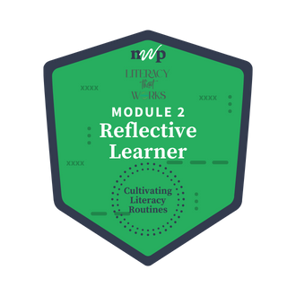

Home

I would start with the visual texts because I think it would be an easier introduction as we already do something kind of like this. I put up a picture (NY times picture of the week) and ask the students to write 2 things they notice and then say what do they think it means/what is happening in the picture. I do this because as scientists it is really important to notice things and think about what conclusions you can make from what you see (what is it telling you). I think building in the they say/I say routine may flow naturally into this and I could use it as a bellwork even??
My students most often read foundational articles (texts)-- they try to read the text to get an introduction to or better understanding of a topic. We are currently working on trying to "get" the main point of each paragraph- why it is there, what does the author want you to know. I would be hesitant to mess with texts or teach another way of interpreting texts until students get the keypoint down. I want them to eventually be able to annotate an article so they get the keypoint from it from the margin notes and don't have to go back and reread the whole thing.
I do think I may try the visual text routine. I really think that could be a useful way to get students thinking (and thinking more deeply).
I could use more examples of visual text that provoke thought or challenge students in a science context.